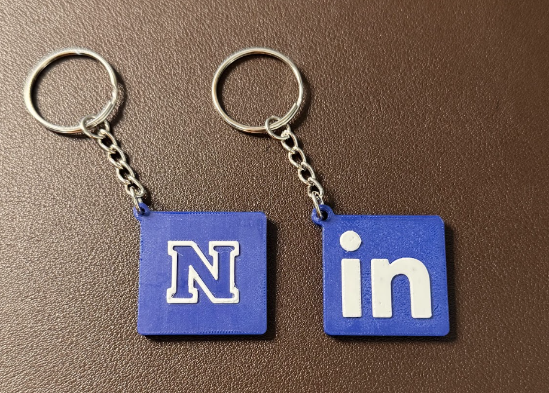

Overview
I initially engineered this NFC smart keychain to seamlessly share my digital portfolio and streamline networking at the IEEE Rising Stars conference. Recognizing its broader potential, I partnered with a university entrepreneurship team and the UNR Marketing Department to scale the prototype into a fully realized business. We ultimately manufactured and sold the official "Nevada N" keychain, bridging hardware design with product marketing to generate over $580 for student emergency funds.
Problem & Motivation
Traditional networking often involves friction, especially when manually exchanging contact information across language barriers or spelling out complex names. I engineered this NFC keychain to solve that by allowing users to instantly share digital business cards and portfolios with a single smartphone tap. I debuted the prototype at the IEEE Rising Stars conference, where it proved to be a massive hit for making professional connections seamless and accessible.
Media

Technical Details
To ensure the keychain could withstand extreme summer temperatures without warping, I specifically selected PETG filament for the final manufacturing run. I modeled the physical enclosure using Solidworks, iterating through multiple 3D-printed prototypes to refine the tolerances and maximize aesthetic appeal. This rigorous design process resulted in a polished, durable, and customer-ready product that seamlessly integrated the NFC technology into a sleek profile.
What I Learned
This project pushed me beyond traditional hardware engineering and into the intersection of product design, marketing, and entrepreneurship. I learned how to successfully pitch technical concepts to business students, navigate institutional partnerships, and manage a product lifecycle from ideation to revenue generation. It reinforced that building an impactful product requires not just solid tech, but a clear understanding of user experience and go-to-market strategy.